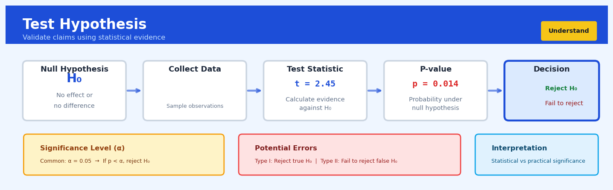

Test Hypothesis#


The most common mistake I see is confusing a high p-value with proof that the null hypothesis is true. Failing to reject H₀ simply means we lack sufficient evidence against it, not that we've confirmed no effect exists. Always remember that hypothesis tests are asymmetric: we can only reject or fail to reject, never accept the null.
The 60-Second Version#
What it does: Hypothesis testing tells you whether a pattern in your data is real or just random chance.
When to use it: Use it when you need to decide if an observed difference—like higher conversion rates after a website change or sales increases in a new region—is statistically meaningful or merely coincidental.
What you get back: A probability (p-value) that indicates whether you should trust the pattern; if it’s below your threshold (typically 5%), the effect is likely genuine and you can act on it with confidence.
At a Glance:
Difficulty |
Moderate |
Typical runtime |
Seconds on 100K rows |
What you bring |
Sample data and a specific claim to test |
What you get |
A p-value and decision: reject or retain the claim |
Heuristix bucket |
Understand — Statistical Analysis & Profiling |
A low p-value doesn’t tell you if the effect matters to your business—only that it’s probably not due to chance.
Learning Objectives#
After reading this chapter, a business user will be able to:
Identify situations where hypothesis testing is needed, such as evaluating whether a new marketing campaign truly improved conversion rates or whether customer satisfaction differs between product versions.
Interpret p-values, confidence intervals, and test statistics to explain to stakeholders whether observed differences are statistically significant or likely due to chance.
Decide whether to implement a change, scale an experiment, or investigate further based on hypothesis test results and their associated confidence levels.
After reading this chapter, a data scientist will be able to:
Implement appropriate hypothesis tests (t-tests, z-tests, chi-square, ANOVA) by verifying assumptions, selecting one-tailed versus two-tailed tests, and handling violations like non-normality or unequal variances.
Set significance levels (alpha) and determine required sample sizes while understanding the trade-offs between Type I errors (false positives), Type II errors (false negatives), and statistical power.
Validate test results by checking assumptions with diagnostic plots, recognizing when results are unreliable due to small samples or violated assumptions, and applying corrections for multiple testing scenarios.
Overview#
Hypothesis testing is a formal statistical framework for making decisions about population parameters based on sample data, quantifying the evidence against a specified null hypothesis. It provides a rigorous, probabilistic methodology for distinguishing genuine effects from random variation, enabling analysts to make defensible claims about relationships, differences, and effects in data. This technique belongs to the family of inferential statistical methods and serves as the foundation for statistical decision-making across virtually all quantitative disciplines.
When to Use This#
Use this when:
Comparing group means or proportions: You need to determine whether observed differences between customer segments, treatment groups, or time periods reflect true population differences or are attributable to sampling variability.
Validating A/B test results: You have run an experiment and must decide whether the observed lift in conversion rate, revenue, or engagement is statistically significant before rolling out a change.
Assessing model assumptions: Before fitting regression models or other parametric procedures, you need to verify assumptions about normality, homoscedasticity, or independence of residuals.
Detecting data quality issues: You suspect systematic differences between data sources, time periods, or collection methods that would indicate data integrity problems requiring investigation.
Evaluating process changes: A manufacturing or operational change has been implemented, and you must determine whether key performance indicators have genuinely shifted from their historical baseline.
Testing for associations: You need to establish whether two categorical variables (e.g., customer segment and churn status) are statistically associated or whether any apparent relationship is coincidental.
Regulatory or compliance reporting: Formal statistical evidence is required for audit, regulatory submission, or legal purposes where subjective judgment is insufficient.
Do NOT use this when:
Sample sizes are very small: With fewer than ~20 observations per group, most tests lack statistical power and assumptions become difficult to verify; consider exact tests or Bayesian methods instead.
You need to estimate effect magnitude: Hypothesis tests answer “is there an effect?” not “how large is the effect?” — supplement with confidence intervals and effect size measures.
Multiple comparisons are involved without correction: Running many tests inflates false positive rates; use methods designed for multiple testing (Bonferroni, FDR control, etc.).
Questions This Answers#
Performance & Attribution#
Is the 15% increase in conversion rates we saw last month a real improvement or just normal fluctuation?
Did our new pricing strategy actually increase revenue, or would we have seen these numbers anyway?
Our customer satisfaction scores jumped 12 points after the redesign—can we confidently say the redesign caused this?
Sales are up 23% year-over-year, but is this statistically significant given our typical seasonal variation?
The new supplier claims their parts last 20% longer than our current vendor’s—is this difference real or marketing hype?
Testing Changes & Investments#
Should we roll out the new checkout process to all customers, or is the 3.2% lift we saw in testing just noise?
We spent $500K on the training program and productivity is up 8%—did the training actually work?
Is Version A or Version B of our landing page genuinely better, or are the performance differences too close to call?
Before we invest another $2M in this marketing channel, can we prove it’s actually driving incremental sales?
The Southwest region piloted a new sales approach with promising results—is it good enough to expand nationally?
Comparison & Decision-Making#
Which of our three distribution strategies will reliably deliver better margins—or are they essentially the same?
Our competitor claims their product outperforms ours by 30%—is that a meaningful difference or statistical sleight of hand?
Should we switch vendors based on these quality test results, or is the performance difference within normal variation?
Two factories produce the same widget with slightly different defect rates—is one actually better or is this random chance?
How It Works#
Imagine you’re a quality inspector at a cookie factory, and the machines are supposed to produce cookies weighing exactly 50 grams each. You suspect Machine A might be malfunctioning and producing lighter cookies. You can’t weigh every single cookie it makes today (that’s thousands!), so instead you grab a random sample of 30 cookies from Machine A and weigh them. The average comes out to 48 grams. Now here’s the question: Is this machine actually broken, or did you just happen to grab 30 cookies that were randomly a bit lighter? Maybe if you grabbed a different 30, you’d get 51 grams. Hypothesis testing gives you a mathematical way to answer: “How unlikely would it be to see an average this far from 50 grams if the machine were actually working fine?”
THE HYPOTHESIS TESTING PROCESS
1. STATE YOUR CLAIM
┌─────────────────────────────────────────┐
│ Null Hypothesis (H₀): │
│ "Nothing unusual is happening" │
│ (Machine produces 50g cookies) │
│ │
│ Alternative Hypothesis (Hₐ): │
│ "There IS an effect" │
│ (Machine produces cookies ≠ 50g) │
└─────────────────────────────────────────┘
↓
2. COLLECT SAMPLE DATA
┌─────────────────────────────────────────┐
│ Sample: 30 cookies → Average = 48g │
└─────────────────────────────────────────┘
↓
3. CALCULATE "HOW WEIRD IS THIS?"
┌─────────────────────────────────────────┐
│ If machine really makes 50g cookies... │
│ How often would we see 48g or lower │
│ just by random chance? │
│ │
│ p-value = 0.02 (2%) │
└─────────────────────────────────────────┘
↓
4. MAKE DECISION
┌─────────────────────────────────────────┐
│ p-value (0.02) < threshold (0.05) │
│ │
│ REJECT NULL → Machine likely broken! │
└─────────────────────────────────────────┘
Step 1: State what “normal” looks like. You start by assuming nothing interesting is happening—this is called the null hypothesis. In our cookie example, the null hypothesis is “the machine produces 50-gram cookies on average.” You also state what you suspect instead—the alternative hypothesis, like “the machine produces cookies that don’t average 50 grams.”
Step 2: Gather your sample data. You collect actual observations from the real world. This might be 30 cookies from the machine, 100 customer purchases, or 50 patients in a drug trial. You calculate a summary statistic from this sample—like the average weight, difference between groups, or percentage who improved.
Step 3: Ask “how surprising is this?” Here’s the clever part: You imagine a world where the null hypothesis is actually true. In that world, you figure out how often random chance alone would give you a result as extreme as what you observed. This probability is called the p-value. A p-value of 0.02 means “if nothing unusual were happening, I’d only see results this extreme about 2% of the time.”
Step 4: Decide whether to reject the null hypothesis. You compare your p-value to a pre-set threshold (commonly 0.05, or 5%). If your p-value is smaller, you conclude: “This result is too weird to chalk up to random chance—something real is probably going on.” If it’s larger, you say: “This could easily happen by chance, so I don’t have enough evidence.”
The key insight: Hypothesis testing works by flipping the question from “Is there an effect?” to “How embarrassingly unlikely would my data be if there were NO effect?”—making it possible to quantify evidence rather than rely on gut feeling.
The Intuition#
Imagine you are a quality control manager at a pharmaceutical company. A new batch of medication has just been produced, and you need to determine whether the active ingredient concentration meets the required specification of 100 mg per tablet. You cannot test every tablet—that would destroy the entire batch—so you test a random sample of 30 tablets and find an average concentration of 98.5 mg. The critical question is: does this 1.5 mg shortfall indicate a genuine production problem, or is it simply the natural variation you would expect when measuring any random sample?
This is the essence of hypothesis testing. You begin by assuming the production process is working correctly (the null hypothesis: true mean equals 100 mg). You then ask: if this assumption were true, how likely would we be to observe a sample mean as extreme as 98.5 mg or more extreme? If this probability is very small—say, less than 5%—you conclude that your assumption was probably wrong, and the batch may indeed be deficient. If the probability is reasonably large, you lack sufficient evidence to reject the assumption, and you proceed as if the process is functioning correctly.
The genius of this framework lies in its asymmetry. We never “prove” the null hypothesis is true; we only accumulate evidence against it. This is analogous to a court of law operating under “innocent until proven guilty.” The defendant (null hypothesis) starts with the presumption of innocence. The prosecution (your data) must provide evidence beyond reasonable doubt (the significance level) to convict. Failure to convict does not prove innocence—it merely indicates insufficient evidence for a conviction. This asymmetry protects against making false accusations (Type I errors) while accepting that some guilty parties may go free (Type II errors).
Understanding the distinction between statistical significance and practical significance is crucial. A pharmaceutical study with 100,000 participants might detect a blood pressure reduction of 0.3 mmHg as “highly significant” (p < 0.001), yet this reduction has no clinical relevance whatsoever. Conversely, a pilot study with 20 patients might find a 15 mmHg reduction that fails to reach significance (p = 0.08) simply because the sample was too small. The hypothesis test tells you whether an effect exists; your domain expertise tells you whether it matters.
The Mathematics#
Formal Framework#
Let \(X_1, X_2, \ldots, X_n\) be a random sample from a population with distribution \(F_\theta\), where \(\theta \in \Theta\) is an unknown parameter (or vector of parameters). A hypothesis test is a procedure for deciding between two complementary hypotheses:
where \(\Theta_0 \cap \Theta_1 = \emptyset\) and typically \(\Theta_0 \cup \Theta_1 = \Theta\).
Test Statistics and Critical Regions#
A test statistic \(T = T(X_1, \ldots, X_n)\) is a function of the sample data whose distribution under \(H_0\) is known (or can be approximated). The critical region \(C\) is the set of values of \(T\) for which we reject \(H_0\):
The critical region is chosen such that:
where \(\alpha\) is the significance level (typically 0.05 or 0.01).
Type I and Type II Errors#
Decision |
\(H_0\) True |
\(H_0\) False |
|---|---|---|
Reject \(H_0\) |
Type I Error (α) |
Correct Decision (Power) |
Fail to Reject \(H_0\) |
Correct Decision |
Type II Error (β) |
The power of a test is defined as:
The p-Value#
The p-value is the probability, under \(H_0\), of observing a test statistic at least as extreme as the one computed from the data:
We reject \(H_0\) when \(p \leq \alpha\).
Common Test Statistics#
One-Sample t-Test (testing \(H_0: \mu = \mu_0\)):
where \(\bar{X} = \frac{1}{n}\sum_{i=1}^n X_i\) and \(S^2 = \frac{1}{n-1}\sum_{i=1}^n (X_i - \bar{X})^2\).
Two-Sample t-Test (testing \(H_0: \mu_1 = \mu_2\), assuming equal variances):
where the pooled standard deviation is:
Welch’s t-Test (unequal variances):
with degrees of freedom approximated by the Welch-Satterthwaite equation:
Chi-Square Test for Independence (contingency tables):
where \(E_{ij} = \frac{(\text{row } i \text{ total}) \times (\text{column } j \text{ total})}{n}\).
Assumptions#
For t-tests:
Independence: Observations are independent within and between groups
Normality: Data are approximately normally distributed (or \(n\) is large enough for CLT)
Homoscedasticity (for pooled t-test): Equal variances across groups
For chi-square tests:
Independence: Observations are independent
Expected frequencies: All \(E_{ij} \geq 5\) (or use Fisher’s exact test)
Relationship to Confidence Intervals#
There is a fundamental duality between hypothesis tests and confidence intervals. A \((1-\alpha)\) confidence interval for \(\theta\) contains all values \(\theta_0\) for which the test of \(H_0: \theta = \theta_0\) would not be rejected at level \(\alpha\):
Understanding the Mathematics#
The Null and Alternative Hypotheses#
The equation:
Read it aloud:
“The null hypothesis states that the population parameter equals some specific value, while the alternative hypothesis states that the population parameter does not equal that specific value.”
What each symbol means:
\(H_0\) = the null hypothesis (what we’re testing against)
\(H_a\) = the alternative hypothesis (what we suspect is true)
\(\theta\) = the population parameter we’re investigating
\(\theta_0\) = the claimed or hypothesized value
\(\neq\) = “is not equal to”
A concrete numerical example:
A coffee shop claims their average transaction is \(12. You suspect it's different. Your hypotheses are: \)H_0: \mu = 12\( versus \)H_a: \mu \neq 12\(. Here, \)\theta\( is the true average transaction amount \)\mu\(, and \)\theta_0 = 12$ dollars.
Why this equation matters:
Setting up hypotheses correctly determines what evidence counts as “surprising” — without this formal structure, you’re just guessing whether differences are meaningful or random noise.
The Test Statistic (Z-score)#
The equation:
Read it aloud:
“The test statistic equals the sample mean minus the hypothesized population mean, divided by the standard error, which is the population standard deviation divided by the square root of the sample size.”
What each symbol means:
\(Z\) = the standardized test statistic
\(\bar{X}\) = the observed sample mean
\(\mu_0\) = the hypothesized population mean (from \(H_0\))
\(\sigma\) = the population standard deviation
\(n\) = the sample size
\(\sqrt{n}\) = square root of sample size
A concrete numerical example:
You sample 64 transactions and find a mean of \(13.20. The coffee shop claims \)\mu_0 = 12\(, and you know from industry data that \)\sigma = 4.80$. Calculate:
Your sample mean is exactly 2 standard errors above the claimed value.
Why this equation matters:
The Z-score translates your raw observation into a universal scale that tells you how “extreme” your result is — without it, you can’t distinguish between a meaningful difference and random variation.
The P-value#
The equation:
Read it aloud:
“The p-value equals the probability of observing a test statistic as extreme as or more extreme than what we actually observed, assuming the null hypothesis is true.”
What each symbol means:
\(p\text{-value}\) = the probability measure of evidence against \(H_0\)
\(P(...)\) = “the probability that…”
\(|Z|\) = the absolute value of the test statistic
\(|z_{\text{obs}}|\) = the absolute value of our calculated Z-score
\(\mid H_0 \text{ true}\) = “given that the null hypothesis is true”
A concrete numerical example:
With \(z_{\text{obs}} = 2.00\), you look up the probability: \(P(|Z| \geq 2.00) = 0.0455\). This means there’s a 4.55% chance of seeing a sample mean this far from \(12 if the true average really is \)12.
Why this equation matters:
The p-value quantifies your evidence numerically — it’s the exact probability that lets you decide whether to reject the coffee shop’s claim or admit your sample could just be unlucky.
The Decision Rule#
The equation:
Read it aloud:
“Reject the null hypothesis if the p-value is less than the predetermined significance level alpha.”
What each symbol means:
\(\alpha\) = the significance level (acceptable false positive rate)
\(<\) = “is less than”
A concrete numerical example:
Using \(\alpha = 0.05\) (5% significance level) and your calculated \(p\text{-value} = 0.0455\): Since \(0.0455 < 0.05\), you reject \(H_0\). You conclude the coffee shop’s claimed average of $12 is wrong.
Why this equation matters:
This rule protects you from over-interpreting noise by setting a clear threshold before you see the data — it’s what makes hypothesis testing a disciplined decision process rather than storytelling.
The Big Picture#
Hypothesis testing mathematics creates a standardized ruler for measuring surprise. We start with competing claims about reality, then use the test statistic to convert messy real-world data into a universal scale of “how many standard errors away from expected.” The p-value translates that distance into a probability we can interpret. We chose this particular mathematical machinery because it accounts for both sample size and variability — larger samples give more precise estimates, and that precision directly affects what counts as “surprising.” At its core, the mathematics answers one question with rigorous honesty: If the claim were true, how shocked should we be by what we actually observed?
Python Implementation#
import numpy as np
import pandas as pd
from scipy import stats
import warnings
# Set random seed for reproducibility
np.random.seed(42)
# =============================================================================
# Example 1: One-Sample t-Test
# Business context: Testing if average customer satisfaction score differs from target
# =============================================================================
print("=" * 70)
print("EXAMPLE 1: One-Sample t-Test")
print("=" * 70)
# Generate synthetic customer satisfaction scores (1-10 scale)
# Company target is 7.5
satisfaction_scores = np.random.normal(loc=7.2, scale=1.5, size=50)
target_score = 7.5
# Perform one-sample t-test
t_stat, p_value = stats.ttest_1samp(satisfaction_scores, target_score)
# Calculate confidence interval for the mean
sample_mean = np.mean(satisfaction_scores)
sample_std = np.std(satisfaction_scores, ddof=1)
n = len(satisfaction_scores)
se = sample_std / np.sqrt(n)
ci_95 = stats.t.interval(0.95, df=n-1, loc=sample_mean, scale=se)
print(f"\nSample size: {n}")
print(f"Sample mean: {sample_mean:.3f}")
print(f"Sample std: {sample_std:.3f}")
print(f"Target value: {target_score}")
print(f"\nTest statistic (t): {t_stat:.4f}")
print(f"P-value (two-tailed): {p_value:.4f}")
print(f"95% Confidence Interval: ({ci_95[0]:.3f}, {ci_95[1]:.3f})")
alpha = 0.05
if p_value < alpha:
print(f"\nConclusion: Reject H₀ at α={alpha}. Evidence suggests mean ≠ {target_score}")
else:
print(f"\nConclusion: Fail to reject H₀ at α={alpha}. Insufficient evidence that mean ≠ {target_score}")
# =============================================================================
# Example 2: Two-Sample t-Test (Independent Samples)
# Business context: Comparing conversion rates between two website designs
# =============================================================================
print("\n" + "=" * 70)
print("EXAMPLE 2: Two-Sample t-Test (Welch's)")
print("=" * 70)
# Generate synthetic revenue per visitor for A/B test
# Control group (current design)
revenue_control = np.random.exponential(scale=25, size=200)
# Treatment group (new design) - slight improvement
revenue_treatment = np.random.exponential(scale=28, size=180)
# Perform Welch's t-test (does not assume equal variances)
t_stat, p_value = stats.ttest_ind(revenue_treatment, revenue_control, equal_var=False)
# Calculate effect size (Cohen's d)
pooled_std = np.sqrt(((len(revenue_control)-1)*np.var(revenue_control, ddof=1) +
(len(revenue_treatment)-1)*np.var(revenue_treatment, ddof=1)) /
(len(revenue_control) + len(revenue_treatment) - 2))
cohens_d = (np.mean(revenue_treatment) - np.mean(revenue_control)) / pooled_std
print(f"\nControl group: n={len(revenue_control)}, mean=${np.mean(revenue_control):.2f}, std=${np.std(revenue_control, ddof=1):.2f}")
print(f"Treatment group: n={len(revenue_treatment)}, mean=${np.mean(revenue_treatment):.2f}, std=${np.std(revenue_treatment, ddof=1):.2f}")
print(f"\nMean difference: ${np.mean(revenue_treatment) - np.mean(revenue_control):.2f}")
print(f"Test statistic (t): {t_stat:.4f}")
print(f"P-value (two-tailed): {p_value:.4f}")
print(f"Cohen's d (effect size): {cohens_d:.3f}")
# =============================================================================
# Example 3: Chi-Square Test for Independence
# Business context: Testing if customer churn is associated with contract type
# =============================================================================
print("\n" + "=" * 70)
print("EXAMPLE 3: Chi-Square Test for Independence")
print("=" * 70)
# Create contingency table
# Rows: Contract type (Month-to-month, One year, Two year)
# Columns: Churn status (Yes, No)
observed = np.array([
[415, 1085], # Month-to-month
[48, 1219], # One year
[42, 1392] # Two year
])
# Create labeled DataFrame for clarity
contingency_df = pd.DataFrame(
observed,
index=['Month-to-month', 'One year', 'Two year'],
columns=['Churned', 'Retained']
)
print("\nContingency Table:")
print(contingency_df)
# Perform chi-square test
chi2, p_value, dof, expected = stats.chi2_contingency(observed)
print(f"\nExpected frequencies (under H₀ of independence):")
expected_df = pd.DataFrame(
expected.round(1),
index=['Month-to-month', 'One year', 'Two year'],
columns=['Churned', 'Retained']
)
print(expected_df)
# Calculate Cramér's V for effect size
n_total = observed.sum()
min_dim = min(observed.shape) - 1
cramers_v = np.sqrt(chi2 / (n_total * min_dim))
print(f"\nChi-square statistic: {chi2:.2f}")
print(f"Degrees of freedom: {dof}")
print(f"P-value: {p_value:.2e}")
print(f"Cramér
## Visualisations


## Using This in Heuristix
### What Data You'll Need
The Test Hypothesis node expects **aggregated or summary data** where you're comparing groups or testing a single value against a benchmark. Your input should include:
- **One grouping column** (categorical) if comparing groups — like "Control" vs "Treatment", or "Region A" vs "Region B"
- **One or more numeric columns** containing the measurements you want to test
- **At least 20-30 rows per group** for reliable results (though the node will work with smaller samples)
**Example input:**
| customer_segment | avg_purchase | satisfaction_score |
|-----------------|--------------|-------------------|
| Premium | 127.50 | 8.2 |
| Premium | 143.20 | 7.9 |
| Standard | 89.30 | 7.1 |
| Standard | 95.80 | 6.8 |
### Configuration Parameters
| Parameter | What It Does | Default | When to Change It |
|-----------|-------------|---------|-------------------|
| **Test Type** | Chooses the statistical test (t-test, ANOVA, chi-square, etc.) | Auto-detect | Switch to manual if you know your data needs a specific test; auto-detect works well 90% of the time |
| **Group Column** | Which column defines your comparison groups | First categorical column | Change when testing a different grouping variable |
| **Measure Column** | The numeric value you're testing | First numeric column | Select the specific metric you care about |
| **Confidence Level** | How certain you want to be (90%, 95%, 99%) | 95% | Use 99% for high-stakes decisions; 90% for exploratory analysis |
| **Alternative Hypothesis** | What you're testing for: "two-sided", "greater", or "less" | Two-sided | Choose "greater" or "less" when you have a directional prediction |
| **Assume Equal Variance** | Whether groups have similar spread | True | Set to False if one group is much more variable than another |
### What You'll Get Back
The node outputs both **enhanced data** and **statistical insights**:
**New columns added to your data:**
- `group_mean` — average value for each group
- `group_std` — standard deviation showing spread
- `sample_size` — count of observations per group
**Metrics panel displays:**
- **Test statistic** — the calculated value (t-value, F-value, etc.)
- **p-value** — your key decision metric (< 0.05 typically means significant)
- **Effect size** — practical magnitude of difference (Cohen's d or similar)
- **Confidence interval** — range where the true difference likely falls
**Visualizations:**
- Distribution plot showing overlap between groups
- Box plot comparing group spreads
- Effect size visualization with confidence bands
### Quick Start: Comparing Two Groups
1. **Connect your data** to the Test Hypothesis node (ensure you have a grouping column and a numeric measure)
2. **Select your Group Column** from the dropdown (e.g., "test_variant")
3. **Choose your Measure Column** (e.g., "conversion_rate")
4. **Keep Confidence Level at 95%** unless you have a specific reason to change it
5. **Run the node** and check the p-value in the results panel
6. **Interpret**: If p-value < 0.05, your groups are statistically different; check the effect size to see if the difference matters practically
### Connecting Downstream
This node pairs naturally with:
- **Report Builder** — to communicate findings to stakeholders with automated significance callouts
- **Filter Node** — to segment only statistically significant results for further analysis
- **Visualization Node** — to create presentation-ready charts of your findings
- **Decision Router** — to automatically route data based on whether tests passed significance thresholds
### Pro Tips from the Field
**Don't confuse statistical and practical significance.** A p-value of 0.001 is impressive, but if your "Premium" customers only spend $2 more on average, that might not justify different treatment.
**Check your sample sizes first.** The node will warn you about small samples, but as a rule: if you have fewer than 30 observations per group, be cautious about your conclusions.
**Use the confidence interval, not just the p-value.** It tells you the *range* of plausible differences. A wide interval means high uncertainty, even with a significant p-value.
**Test one hypothesis at a time.** If you're testing 20 different metrics, you'll get false positives. Consider applying a multiple testing correction (Bonferroni option in advanced settings).
**Save your configuration as a template** if you're running regular A/B tests — you'll thank yourself later when you're processing weekly experiments.
## Config Recipes
### Recipe 1: Rapid Exploration Test
- **When to use:** Initial data exploration when you need quick directional insights across multiple variables without commitment to findings.
- **Settings:**
| Parameter | Value | Why |
|-----------|-------|-----|
| `alpha` | 0.10 | Higher threshold accepts more signals for follow-up investigation |
| `alternative` | 'two-sided' | Don't assume direction of effects yet |
| `correction` | None | Skip multiple testing adjustments for speed |
| `sample_size` | First 1000 rows | Faster computation, good enough for patterns |
| `bootstrap_iterations` | 0 | Disable resampling methods |
- **What you get:** Fast yes/no signals on which variables warrant deeper investigation, completed in seconds even with dozens of tests.
- **Trade-off:** High false positive rate (10%) means you'll chase some spurious patterns that won't replicate.
### Recipe 2: Publication-Grade Rigor
- **When to use:** Final confirmatory analysis for regulatory submission, academic publication, or high-stakes business decisions where errors are costly.
- **Settings:**
| Parameter | Value | Why |
|-----------|-------|-----|
| `alpha` | 0.01 | Stringent threshold minimizes false discoveries |
| `alternative` | Based on theory | Use one-sided only when direction is pre-specified |
| `correction` | 'bonferroni' | Conservative family-wise error control |
| `min_sample_size` | Power analysis result | Ensure 80%+ power to detect meaningful effects |
| `bootstrap_iterations` | 10000 | Robust inference without normality assumptions |
| `random_state` | 42 | Reproducible results for auditing |
- **What you get:** Defensible findings with quantified uncertainty that withstand peer scrutiny and regulatory review.
- **Trade-off:** Conservative approach will miss real but subtle effects; requires larger samples and longer computation time.
### Recipe 3: High-Dimensional Screening
- **When to use:** Feature selection with 50+ candidate variables where most are irrelevant (genomics, sensor data, survey batteries).
- **Settings:**
| Parameter | Value | Why |
|-----------|-------|-----|
| `alpha` | 0.05 | Standard threshold before correction |
| `correction` | 'fdr_bh' | Controls false discovery rate, less conservative than Bonferroni |
| `alternative` | 'two-sided' | Screen for effects in either direction |
| `effect_size_threshold` | Cohen's d > 0.3 | Require practical significance, not just statistical |
| `pre_filter` | Variance > 0.01 | Drop near-constant variables before testing |
- **What you get:** Ranked list of genuinely promising features while controlling the proportion of false discoveries at ~5%.
- **Trade-off:** More false positives than Bonferroni but far better power to detect real signals in high dimensions.
### Recipe 4: Equivalence Testing for Parity Checks
- **When to use:** Proving two processes are "similar enough" (A/B test found no winner, algorithmic fairness across groups, generic drug equivalence).
- **Settings:**
| Parameter | Value | Why |
|-----------|-------|-----|
| `alpha` | 0.05 | Standard significance level |
| `alternative` | 'equivalence' | Reverse burden of proof |
| `equivalence_margin` | ±10% of control mean | Define acceptable difference threshold |
| `min_sample_size` | 4× standard test | Equivalence tests need more power |
| `method` | 'tost' | Two one-sided tests procedure |
- **What you get:** Statistical proof that differences are negligible rather than just "not significant."
- **Trade-off:** Requires pre-specifying what "close enough" means and substantially larger samples than standard tests.
## Business Applications
**Financial Services**
A mid-sized UK mortgage lender needs to determine whether a new automated credit scoring algorithm reduces default rates compared to their legacy manual review process. Hypothesis testing allows them to rigorously compare default rates between two randomly assigned groups of borrowers, controlling for the risk that observed differences might be due to chance rather than genuine algorithm superiority. After analyzing 18 months of data across 4,200 loans, they confirmed a statistically significant reduction in defaults from 3.2% to 1.9%, justifying full deployment and saving an estimated £2.8M annually in bad debt write-offs.
**Retail & E-commerce**
An online fashion retailer with 850,000 monthly visitors wants to know if adding video product demonstrations increases conversion rates beyond random fluctuation. By conducting an A/B test with hypothesis testing framework, they split traffic equally between the current photo-only pages and video-enhanced versions, then apply statistical tests to determine if the observed conversion lift from 2.4% to 2.9% is genuine or could have occurred by chance. The analysis confirmed statistical significance (p < 0.01), giving executives confidence to invest £180,000 in video production, which subsequently generated £4.2M in additional annual revenue.
**Healthcare**
A regional hospital network operating 12 facilities must decide whether a new triage protocol actually reduces emergency department wait times or if initial positive results were merely coincidental. Hypothesis testing on 23,000 patient visits compares median wait times before and after protocol implementation, accounting for seasonal variation and patient acuity. The statistical analysis confirmed a significant reduction from 87 minutes to 62 minutes (p < 0.001), validating the protocol's effectiveness and improving patient satisfaction scores by 28 points while reducing walk-out rates from 8.3% to 4.1%.
**Insurance**
A commercial property insurer with £420M in annual premiums questions whether their new fraud detection model genuinely identifies more fraudulent claims or simply flags more cases randomly. Statistical hypothesis testing on 15,600 claims compares false positive rates and true detection rates between the old and new systems. Results showed the new model increased fraud detection by 41% while reducing false positives by 34%, preventing an estimated £6.7M in fraudulent payouts annually while decreasing investigator workload on legitimate claims.
**Manufacturing**
An automotive parts manufacturer producing 2.3M components monthly needs to verify whether a proposed equipment upgrade will genuinely reduce defect rates below the current 0.8% threshold. Hypothesis testing on pilot production runs of 50,000 units determines whether observed defect rate improvements to 0.5% are statistically significant or within normal process variation. The rigorous statistical confirmation justified the £890,000 capital investment, which subsequently reduced warranty claims and rework costs by £2.1M annually.
**Logistics & Supply Chain**
A national courier service handling 400,000 daily deliveries tests whether a new route optimization algorithm actually improves on-time delivery rates compared to their existing system. Using hypothesis testing on three months of delivery data across matched routes, they distinguish genuine performance improvements from weather-related or seasonal noise. Statistical analysis confirmed on-time delivery improved from 91.2% to 94.7%, reducing customer complaints by 52% and avoiding approximately £1.8M in service credits and redelivery costs.
**Marketing & Advertising**
A B2B software company with a £4M annual advertising budget must determine whether LinkedIn ads outperform Google Ads for enterprise lead generation, not just in this quarter but reliably. Hypothesis testing on 8,400 leads compares conversion-to-opportunity rates between channels while controlling for seasonal effects and budget variations. Results proved LinkedIn generated statistically superior qualified opportunities (11.2% vs. 7.8%), enabling them to reallocate £1.2M in budget and increase pipeline value by 34%.
**Telecommunications**
A mobile network operator serving 8M subscribers wants to know if a new customer retention offer genuinely reduces churn or if recent improvements were simply market-driven. Hypothesis testing compares churn rates between customers who received the offer versus a control group, isolating the offer's true effect. The analysis demonstrated a statistically significant churn reduction from 2.1% to 1.6% monthly, retaining approximately 40,000 additional customers annually worth £18M in lifetime value.
**Energy & Utilities**
A municipal water utility questions whether smart meter installations actually reduce residential consumption or if observed decreases reflect weather patterns. Statistical hypothesis testing on 34,000 households compares consumption before and after installation, controlling for temperature and seasonal variables. Analysis confirmed a genuine 7.2% reduction in average daily consumption, deferring £12M in infrastructure expansion costs.
**Public Sector**
A metropolitan police force with 2,800 officers tests whether body-worn cameras reduce use-of-force incidents beyond what might occur through general training improvements or societal changes. Hypothesis testing on 16 months of incident data across matched patrol areas isolates the cameras' specific effect. Results showed a statistically significant 37% reduction in force incidents, strengthening community relations and reducing liability costs by an estimated £840,000 annually.
**SaaS & Technology**
A cloud collaboration platform with 450,000 users must determine whether a controversial UI redesign actually improves user engagement or merely creates the illusion of improvement through novelty effects. Hypothesis testing on session duration, feature adoption, and return rates across a six-week period distinguishes genuine usability gains from temporary curiosity. Statistical analysis revealed the redesign significantly increased daily active usage from 38% to 44% and average session time from 23 to 31 minutes, reducing churn by 2.1 percentage points and adding £3.4M in annual recurring revenue.
## Worked Example
Sarah Chen, a senior data scientist at Meridian Insurance, was halfway through her morning coffee when the head of marketing, David, dropped by her desk. "We just ran a campaign offering policy discounts through email versus traditional mail," he said, pulling up a chair. "Email is obviously cheaper to send, but the VP wants proof it actually converts better before we shift the entire Q3 budget. Can you tell me if there's a real difference, or if we're just seeing noise?"
The question mattered more than usual. Meridian was planning a $2.3 million marketing spend for the next quarter, and the choice between email and direct mail would determine both the reach and the ROI. David needed an answer by Friday's budget meeting.
Sarah pulled conversion data from the CRM system for the past six weeks—8,200 customers who'd received offers through one of the two channels. The data was messy in the usual ways: some customers had incomplete zip codes, a handful had conversion dates before the campaign start (data entry errors), and the channel field occasionally read "E-mail" instead of "Email." After cleaning, she had a workable dataset:
| customer_id | channel | converted | age_group | premium_tier |
|-------------|---------|-----------|-----------|--------------|
| 10243 | Email | Yes | 35-50 | Standard |
| 10244 | Mail | No | 50-65 | Premium |
| 10245 | Email | Yes | 18-35 | Standard |
| 10246 | Mail | Yes | 50-65 | Standard |
| 10247 | Email | No | 35-50 | Premium |
The full dataset showed 4,180 email recipients and 4,020 mail recipients. Email had a 12.4% conversion rate; mail came in at 10.1%. That 2.3 percentage point difference looked promising, but Sarah knew better than to trust raw percentages alone.
She opened her hypothesis testing script. This was a classic two-proportion z-test scenario: comparing conversion rates between two independent groups. Sarah defined her null hypothesis clearly—there's no real difference in conversion rates between channels, and any observed difference is just random variation. Her alternative hypothesis: email genuinely outperforms mail.
She set her significance level at α = 0.05, the industry standard, meaning she'd accept a 5% chance of false alarm. For a business decision of this magnitude, that felt appropriate—stringent enough to avoid costly mistakes, but not so strict that she'd miss a real opportunity.
```python
import numpy as np
from scipy import stats
# Sarah's conversion data from the campaign
email_conversions = 518 # out of 4180 email sends
email_total = 4180
mail_conversions = 406 # out of 4020 mail sends
mail_total = 4020
# Calculate conversion rates
email_rate = email_conversions / email_total
mail_rate = mail_conversions / mail_total
print(f"Email conversion rate: {email_rate:.3%}")
print(f"Mail conversion rate: {mail_rate:.3%}")
print(f"Observed difference: {email_rate - mail_rate:.3%}\n")
# Two-proportion z-test
# Pooled proportion under null hypothesis
pooled_p = (email_conversions + mail_conversions) / (email_total + mail_total)
pooled_se = np.sqrt(pooled_p * (1 - pooled_p) * (1/email_total + 1/mail_total))
# Calculate z-statistic
z_stat = (email_rate - mail_rate) / pooled_se
p_value = 2 * (1 - stats.norm.cdf(abs(z_stat))) # two-tailed test
print(f"Z-statistic: {z_stat:.3f}")
print(f"P-value: {p_value:.4f}")
print(f"Significant at α=0.05? {p_value < 0.05}")
The results appeared on her screen within seconds:
Metric |
Value |
|---|---|
Email conversion rate |
12.39% |
Mail conversion rate |
10.10% |
Observed difference |
2.29% |
Z-statistic |
3.47 |
P-value |
0.0005 |
Conclusion |
Reject null hypothesis |
The p-value of 0.0005 was striking—there was only a 0.05% probability of seeing a difference this large if email and mail were truly equivalent. The z-statistic of 3.47 sat well beyond the critical threshold of 1.96. This wasn’t random noise. Email was genuinely outperforming direct mail.
Sarah’s “aha moment” wasn’t just about statistical significance—it was about practical significance. A 2.3 percentage point lift meant roughly 95 additional conversions per 4,000 customers. At an average policy value of \(840 annually, that translated to nearly \)80,000 in additional revenue per campaign cycle, more than justifying the test.
Friday morning, Sarah presented to the budget committee. She showed the conversion rates, walked through the hypothesis test, and emphasized the p-value. “The probability this difference happened by chance is five in ten thousand,” she said. “Email isn’t just cheaper to send—it converts measurably better.” The VP approved the budget shift immediately. Q3 marketing went 80% email, 20% mail for compliance and customer preference reasons.
Two quarters later, the decision had generated an estimated $340,000 in incremental revenue.
Reflecting afterward, Sarah noted one limitation: the test assumed random assignment, but customers weren’t perfectly randomized—older customers skewed slightly toward the mail group due to preference settings. Next time, she’d stratify by age group first, or use a chi-square test to control for demographic confounding. Still, the core finding held up under scrutiny, and the business impact was undeniable.
Interpreting Your Results#
You’ve just run your hypothesis test and you’re staring at a p-value, possibly a test statistic, maybe confidence intervals, and perhaps some charts. Here’s exactly what you’re looking at and what it means for your decision.
The P-Value: Your Primary Decision Metric#
Plain-English meaning: The p-value answers this question: “If there was actually no real effect or difference (if the null hypothesis were true), what’s the probability I’d see results this extreme or more extreme just by random chance?” It’s not the probability your hypothesis is true—it’s how surprised you should be by your data if nothing real is happening.
Concrete benchmarks:
Below 0.05: Statistically significant by conventional standards. You have strong evidence against the null hypothesis. Most fields accept this as sufficient to claim an effect exists.
0.05–0.10: Marginally significant or “trending.” Some exploratory contexts accept this, but you shouldn’t make major business decisions here without additional evidence.
Above 0.10: Not statistically significant. You don’t have sufficient evidence to claim an effect. This doesn’t prove nothing is happening—it just means your data can’t distinguish signal from noise.
Red flags:
p-value exactly 0.000: Your software is rounding. The true value is extremely small, but “exactly zero” is impossible. Report as “p < 0.001.”
p-value suspiciously close to 0.05 (like 0.049 or 0.051): You might be witnessing p-hacking or cherry-picked analyses. Verify your analysis was pre-specified, not adjusted to achieve significance.
Multiple p-values all significant: If you tested 20 hypotheses, you’d expect one p < 0.05 by chance alone. You need multiple comparison corrections (Bonferroni, FDR) before celebrating.
Test Statistic and Effect Size#
Plain-English meaning: The test statistic (t-value, z-score, F-statistic, chi-square) measures how many standard errors your observed effect is away from zero. The effect size tells you whether that difference actually matters in practical terms.
Concrete benchmarks for common effect sizes (Cohen’s d, correlation r):
Small effect: d = 0.2, r = 0.1. Detectable statistically with large samples, but may not matter practically.
Medium effect: d = 0.5, r = 0.3. Generally worth acting on in business contexts.
Large effect: d = 0.8, r = 0.5. Clearly important and actionable.
Red flags:
Huge test statistic (|t| > 10 or |z| > 5): Often indicates a data quality issue, not a real effect. Check for data entry errors or inappropriate test choice.
Significant p-value but tiny effect size: With massive samples, trivial differences become “significant.” A 0.1% conversion rate increase might be statistically significant but not worth implementing.
Confidence Intervals: Your Range of Plausible Values#
Plain-English meaning: If the true population parameter is a bullseye, the confidence interval is your target area. You’re 95% confident (typically) the true value falls somewhere in this range.
How to read them:
Interval excludes zero/null value: Consistent with statistical significance. You can claim a directional effect.
Interval includes zero: Not significant. The true effect could be zero, positive, or negative.
Narrow interval: Precise estimate. You have enough data to pin down the effect size.
Wide interval: Imprecise. You need more data or have high variability.
Red flags:
Interval absurdly wide (e.g., difference in conversion rates: -50% to +80%): Your sample size is too small to draw any meaningful conclusions.
Interval excludes the null but includes practically meaningless values: Statistically significant but might not justify action.
Reading Multiple Outputs Together#
The most complete picture emerges when you combine metrics:
Low p-value + large effect size + narrow confidence interval: Gold standard. You have strong, precise evidence of a meaningful effect. Act on this.
Low p-value + small effect size + large sample: Statistically significant but potentially unimportant. Check if the effect size justifies implementation costs.
High p-value + large observed effect + wide confidence interval: Intriguing but inconclusive. You might have a real effect but need more data.
Sanity Check Checklist#
Before trusting your results, verify:
Sample size meets minimum requirements (typically n ≥ 30 per group for t-tests, or power analysis recommendations)
Test assumptions are met (normality for t-tests, independence, equal variances if required)
Data has been cleaned (outliers examined, missing data handled appropriately)
You ran the test you pre-specified (not multiple tests until one worked)
Effect direction makes logical sense (a negative conversion rate change from an improvement campaign should raise questions)
Good Enough to Act On?#
You can confidently act when: p < 0.05 AND effect size exceeds your “minimum meaningful difference” AND confidence interval excludes zero and excludes trivial effects. If all three conditions hold, you have statistical significance, practical importance, and precision. Stop analyzing and start implementing. If any condition fails, you either need more data or should accept that the evidence doesn’t support action.
Decision Guidance#
What This Result Is Telling You#
When you conduct a hypothesis test, you’re essentially asking: “Is what I’m seeing in my data a real pattern I can act on, or just random noise?” The result tells you how confident you can be that the effect you’ve observed—a difference between groups, a relationship between variables, or a change over time—is genuine rather than coincidental. Think of it as a filter that separates signal from static in your business data.
The p-value that emerges from hypothesis testing answers a specific question: “If there were actually nothing interesting happening in reality, how surprising would my observed data be?” A small p-value (typically below 0.05) means your data would be very surprising if nothing real were going on, suggesting you’ve likely detected something actionable. A large p-value means your data is perfectly consistent with randomness, indicating you shouldn’t change strategy based on these findings.
Importantly, this framework doesn’t tell you how important or valuable an effect is—only whether it’s real. A marketing campaign might produce a statistically significant lift in conversion rates, but if that lift is 0.1% and costs more to maintain than it generates, the statistical reality doesn’t translate to business value. Always pair statistical significance with practical significance: effect sizes, cost-benefit analysis, and strategic fit.
Decision Points#
If you see this… |
It means… |
Recommended action |
Who acts on this |
|---|---|---|---|
p-value < 0.01 with effect size meeting business thresholds |
Strong evidence of a real, meaningful effect; very unlikely to be random chance |
Proceed with implementation; allocate resources to scale the intervention |
Department head, product owner |
p-value between 0.01 and 0.05 with moderate effect size |
Moderate evidence of a real effect; statistically detectable but requires context |
Proceed with pilot expansion; monitor closely with clear success metrics |
Program manager, analytics lead |
p-value between 0.05 and 0.10 with large potential impact |
Weak statistical evidence but possible signal; borderline result |
Conduct additional testing with larger sample or longer timeframe before major investment |
Research team, data science lead |
p-value > 0.10 regardless of observed difference |
No statistical evidence of real effect; observed pattern consistent with random variation |
Do not proceed; observed differences are likely noise; redirect resources to validated opportunities |
Executive sponsor, budget owner |
When to Proceed vs. Investigate Further#
Proceed with confidence when:
p-value < 0.01 AND effect size exceeds minimum viable threshold for your business case
Sample size exceeds 1,000 observations (or appropriate threshold for your domain)
Test assumptions verified (normality, independence, equal variance as applicable)
Results replicate across multiple time periods or segments
Proceed with caution when:
p-value between 0.01–0.05 with effect size near your decision threshold
Sample size between 100–1,000 observations
Results directionally consistent across subgroups but not all statistically significant
One or more test assumptions moderately violated but corrections applied
Investigate before acting when:
p-value between 0.05–0.10 (suggestive but inconclusive)
Observed effect size is large but sample size is small (n < 100)
Results contradict existing strong evidence or domain expertise
High variance within groups relative to differences between groups
Do not use these results yet when:
p-value > 0.10 (insufficient evidence)
Critical test assumptions violated (e.g., extreme outliers, severe non-independence)
Sample size below 30 observations without specialized methods
Data quality issues identified (missing data >20%, measurement errors, selection bias)
The Cost of Getting This Wrong#
Misinterpreting hypothesis tests leads to expensive mistakes in both directions. Acting on a false positive—treating random noise as signal—means launching products that will fail, implementing process changes that won’t deliver results, or scaling marketing campaigns that don’t actually work. A retailer might redesign their checkout flow based on a spurious test result, investing \(500K in development and training, only to see no improvement in actual conversion rates. Meanwhile, dismissing a true positive—ignoring a real effect because the p-value was 0.06 instead of 0.04—means missing genuine opportunities: the competitor optimization you failed to adopt, the customer segment you didn't target, the cost-saving process you never implemented. Perhaps most dangerously, misunderstanding practical versus statistical significance leads to celebrating trivial improvements: your email subject line test was statistically significant, so you restructured the entire content team around it, despite the effect being a 0.2% lift that generates \)3,000 annually while the restructuring cost $200,000.
Common Pitfalls#
The P-Value Treasure Hunt
Here’s what happened: A marketing analyst was testing whether a new email subject line improved open rates. They ran 15 different A/B tests across different customer segments, testing various subject lines. One segment showed p = 0.03, so they declared victory and rolled out that subject line company-wide. Three months later, overall open rates hadn’t budged.
Why it happens: When you run multiple tests, you’re buying lottery tickets. Run 20 tests at α = 0.05, and you’ll expect one “significant” result by pure chance. The analyst confused statistical significance from multiple comparisons with a genuine effect—a classic case of p-hacking, even if unintentional.
How to detect it: Count your tests. If you see p-values just barely crossing the significance threshold (0.03, 0.047) after multiple comparisons, you’re likely seeing noise. Check the analysis log for how many tests were actually run before finding a “winner.”
The fix: Apply Bonferroni correction (divide α by number of tests) or use false discovery rate methods. Better yet, pre-register your hypothesis and test only what you planned.
The Sample Size Shrug
Here’s what happened: A junior data scientist tested whether a new checkout flow improved conversion rates. With 50 users in each group, they got p = 0.08 and reported “no significant difference, we should abandon this feature.” The product team killed a six-month project. A year later, a competitor implemented the same feature and claimed 12% revenue lift.
Why it happens: Confusing “absence of evidence” with “evidence of absence.” The test was underpowered—too small to detect anything but massive effects. The analyst knew about statistical significance but didn’t grasp statistical power.
How to detect it: Calculate post-hoc power or look at confidence intervals. If your 95% CI spans from -30% to +45%, you haven’t proven anything—your interval includes both disaster and triumph. Standard red flag: total sample size under 1,000 for typical conversion rate tests.
The Effect Size Blindness
Here’s what happened: A senior analyst tested a new algorithm and proudly announced “statistically significant improvement, p < 0.001!” with 500,000 users in the test. The actual difference was 0.02%, which would generate \(300 annually. The engineering cost to implement was \)50,000.
Why it happens: With massive datasets, trivially small differences become “statistically significant.” Experienced practitioners sometimes get seduced by tiny p-values, forgetting that significance ≠ importance. The business impact was invisible while the statistical signal was loud.
How to detect it: Always report effect sizes alongside p-values. If Cohen’s d < 0.2 or your conversion rate lift is under 1%, ask whether it matters economically. Check if confidence intervals include the minimum detectable effect (MDE) you actually care about.
The fix: Define practical significance thresholds before testing—what’s the minimum improvement worth implementing?
The Independence Illusion
Here’s what happened: An analyst tested whether a new app notification increased engagement. They ran a t-test comparing 1,000 sessions from 100 treatment users against 1,000 sessions from 100 control users. Results showed p = 0.001. After rollout, results vanished completely.
Why it happens: The t-test assumes independent observations, but multiple sessions from the same user are correlated. The effective sample size was ~100, not 1,000. The analyst inflated their sample size by treating repeated measures as independent, artificially shrinking standard errors.
How to detect it: Check your data structure. If you have more rows than unique users/entities, you likely have non-independent observations. Your degrees of freedom should reflect the number of independent units, not total measurements.
The fix: Use appropriate methods for clustered data: mixed-effects models, cluster-robust standard errors, or aggregate to user-level before testing.
The Peeking Problem
Here’s what happened: A growth team ran an A/B test targeting 10,000 users per group. After 2,000 users, someone checked results and saw p = 0.04. They stopped the test and shipped the winner. Post-launch metrics showed no improvement.
Why it happens: Repeatedly checking p-values during a test inflates Type I error rates dramatically. What should be 5% false positive rate becomes 20-30%. It’s tempting to “just take a peek,” especially under business pressure for fast results.
How to detect it: Review test stopping criteria. If tests consistently stop right after crossing p = 0.05 with small samples, peeking likely occurred. Check test logs for how many times results were queried before stopping.
The fix: Pre-commit to sample size via power analysis, or use sequential testing methods (like group sequential designs) that adjust significance thresholds for interim looks.
Common Misconceptions#
“A p-value tells you the probability that the null hypothesis is true”
Why people believe this: The language of hypothesis testing seems to invite this interpretation. We “reject” or “fail to reject” the null hypothesis based on the p-value, which naturally suggests we’re calculating probabilities about hypotheses themselves. The phrasing “significant at p < 0.05” sounds like we’re 95% confident the null is false.
The truth: The p-value is the probability of observing data as extreme as yours if the null hypothesis were true—not the probability that the null hypothesis is true. This distinction is fundamental. P(data|null) ≠ P(null|data). The first is what we calculate; the second is what we actually want but cannot obtain without Bayesian methods and prior probabilities. Hypothesis testing operates entirely within a conditional universe where we assume the null is true, then measure how surprising our data would be in that universe. It never calculates backward to make probability statements about the hypothesis itself.
The real-world consequence: A product manager sees p = 0.03 and tells leadership there’s a 97% chance the new feature increases engagement. Leadership allocates $2M to rollout based on this “near certainty.” In reality, with low statistical power, publication bias, and multiple testing, the probability the effect is real might be closer to 50%. The feature launches, shows no sustained impact, and the data team loses credibility when they can’t explain why their “97% certain” finding didn’t hold.
“If the result isn’t statistically significant, there’s no effect”
Why people believe this: The binary language of hypothesis testing—reject or fail to reject—creates the impression that non-significant results mean the absence of an effect. Years of focusing only on “significant” findings in journals and reports reinforce this pattern. The logic seems sound: if we can’t detect it, it’s not there.
The truth: Failure to reject the null hypothesis means only that you lack sufficient evidence to conclude an effect exists—not that you’ve proven no effect exists. Statistical power matters enormously here. A small, underpowered study might fail to detect even a substantial effect, while a massive study might detect a trivially small effect. Absence of evidence is not evidence of absence. The null hypothesis is never proven true; it simply remains a plausible explanation for the data.
The real-world consequence: A pharmaceutical company tests a competitor’s drug in a small trial, finds p = 0.08, and confidently markets their own product as superior because “studies show no significant benefit from the alternative.” Regulators later discover the trial had only 30% power to detect clinically meaningful effects. Patients were denied an effective treatment based on a misinterpreted non-result, and the company faces litigation for misleading claims.
“Statistical significance means practical importance”
Why people believe this: We invest considerable effort into achieving statistical significance, treating p < 0.05 as a meaningful threshold. The word “significant” itself implies importance. When results cross this threshold, it feels like we’ve discovered something that matters.
The truth: Statistical significance indicates only that an effect is distinguishable from random noise—not that it’s large enough to care about. With sufficient sample size, even infinitesimally small effects become statistically significant. A website test with 10 million users might detect a “highly significant” (p < 0.001) 0.001% improvement in click-through rate—technically real but economically meaningless after accounting for implementation costs. Effect sizes, confidence intervals, and domain knowledge determine practical importance; p-values do not.
The real-world consequence: An e-commerce team prioritizes implementing fifteen “statistically significant” UI changes from massive A/B tests, consuming three months of engineering time. Each change improved conversion by 0.01-0.02%—real but trivial. Meanwhile, customer research suggesting a simplified checkout flow (not yet tested) sits ignored. The team reports “data-driven wins” while conversion rates remain essentially flat and a practical 3% improvement opportunity goes unexplored.
“Running multiple tests increases the chance that the null hypothesis is true”
Why people believe this: The multiple testing problem is widely known—that running many tests inflates false positive rates. This knowledge sometimes gets garbled into thinking that multiple testing somehow changes the underlying reality or makes true effects less likely. The confusion arises from conflating the probability of making an error with the state of the world.
The truth: The null hypothesis is either true or false, independent of how many tests you run. What changes with multiple testing is your false positive rate—the probability you’ll incorrectly reject a true null hypothesis increases as you conduct more tests. If you run 100 independent tests on null effects at α = 0.05, you expect about 5 spurious “significant” findings. The reality doesn’t change; your error rate does. Proper correction methods (Bonferroni, FDR control) adjust your significance threshold to maintain your intended error rate across the family of tests.
The real-world consequence: A marketing analyst tests 50 campaign variations, finds 3 significant results, then applies Bonferroni correction and finds none survive. She concludes “the correction procedure eliminated the real effects” and reports the uncorrected significant results to management. Two of the three “winning” campaigns perform poorly in rollout because they were false positives. The third, which was genuinely effective, gets dismissed alongside the failures, and the analyst abandons testing altogether, believing the methodology “doesn’t work.”
“A larger sample size always makes hypothesis testing better”
Why people believe this: Statistical theory emphasizes that larger samples increase statistical power, reduce standard errors, and produce more precise estimates. We’re taught that sampling error decreases with √n. More data seems unambiguously better—more information should lead to better decisions.
The truth: While larger samples do increase statistical power and precision, they can make hypothesis testing worse for decision-making by detecting effects too small to matter. As sample size approaches infinity, p-values approach zero for any non-zero effect, no matter how trivial. Tests become hypersensitive detectors of irrelevant differences. Additionally, very large samples can mask important issues: they reduce sensitivity to assumption violations that would be problems in smaller samples, create false confidence in point estimates despite meaningful heterogeneity, and shift focus entirely away from effect sizes toward significance. The optimal sample size balances power to detect meaningful effects against the risk of declaring trivial effects “significant.”
The real-world consequence: A data scientist analyzes customer satisfaction across regions using 5 million survey responses. Every pairwise comparison shows p < 0.001—regional differences in average satisfaction of 0.02 points on a 10-point scale are all “highly significant.” She presents a heat map of 50 significant differences to the regional operations team, who must now decide where to allocate improvement resources. Without effect size context, they cannot distinguish the 0.02-point differences from the 0.8-point differences. They either ignore all the findings as overwhelming noise or waste resources addressing trivial regional variations while missing the few regions with genuinely problematic satisfaction scores.
How This Connects#
Before This Node#
Clean Data provides validated, standardized datasets free from nulls, duplicates, and formatting inconsistencies that would otherwise violate statistical test assumptions. Test Hypothesis requires proper data types and completeness to calculate accurate test statistics—bad upstream data includes mixed types in numeric columns, systematic missing values in treatment groups, or unhandled outliers that skew variance estimates, leading to invalid p-values and false conclusions about significance.
Split Data delivers properly randomized training/holdout sets or stratified samples that ensure representative group composition for A/B testing and comparative hypothesis tests. Without appropriate splitting, Test Hypothesis may compare biased samples where confounding variables create spurious relationships—bad splits include temporal leakage, imbalanced class representation, or non-random assignment that make statistical comparisons meaningless.
Explore Data reveals distributional characteristics, variance patterns, and sample sizes that determine which hypothesis test is statistically valid for your data structure. This upstream analysis identifies normality violations, variance heterogeneity, or small sample sizes that dictate whether to use parametric or non-parametric tests—skipping exploration means applying t-tests to heavily skewed data or chi-square tests to sparse contingency tables, producing unreliable results.
Encode Variables transforms categorical variables into formats suitable for statistical testing, creating proper grouping variables for ANOVA or binary indicators for proportion tests. Test Hypothesis needs categorical predictors properly labeled and numeric outcomes appropriately scaled—bad encoding includes leaving string categories unsorted for ordinal tests, creating dummy variables with multicollinearity, or inconsistent category labels that fragment sample sizes below minimum thresholds.
Engineer Features constructs the specific derived variables, interaction terms, or normalized metrics that form the actual quantities being tested for differences or relationships. Well-engineered features align with the business hypothesis and meet test assumptions—poorly engineered features include ratios with zero denominators, time-aggregations at wrong granularities, or composite scores that obscure the actual effect being tested, making results uninterpretable.
After This Node#
Report Insights translates test statistics, p-values, and confidence intervals into business-readable findings that communicate significance, effect sizes, and practical implications to stakeholders. Test Hypothesis output provides the statistical rigor needed to make defensible claims like “the new feature increased conversion by 12% (p<0.01, 95% CI: 8-16%)” rather than anecdotal observations.
Tune Model uses hypothesis test results to validate whether feature engineering, algorithm selection, or hyperparameter changes produce statistically significant performance improvements beyond random variation. The p-values and effect sizes from Test Hypothesis prevent overfitting to noise by confirming that model improvements are genuine rather than sampling artifacts.
Predict Outcome incorporates only those features confirmed through hypothesis testing to have significant relationships with the target variable, reducing model complexity and improving generalization. Test Hypothesis serves as a feature selection gate, filtering out spurious correlations that would degrade prediction accuracy on new data.
Monitor Performance establishes baseline distributions and significance thresholds from hypothesis tests that trigger alerts when production metrics drift beyond expected variation. The confidence intervals and test statistics from Test Hypothesis define normal operating ranges and detect when changes represent true degradation rather than random fluctuation.
Common Pipeline Patterns#
A/B Test Validation Pipeline
Split Data → Encode Variables → Test Hypothesis → Report Insights → Monitor Performance
Validates whether product changes (new UI, pricing, algorithm) produce statistically significant business metric improvements, typically detecting 5-15% effect sizes with 95% confidence before full rollout.
Predictive Feature Selection Pipeline
Clean Data → Engineer Features → Test Hypothesis → Select Features → Tune Model → Predict Outcome
Builds accurate prediction models by first testing which engineered features show significant relationships with the target, reducing 100+ candidate features to 10-20 statistically validated predictors.
Segmentation Profiling Pipeline
Explore Data → Cluster Segments → Test Hypothesis → Report Insights
Identifies customer segments with statistically distinct behavioral patterns, confirming that cluster differences in spending, churn, or engagement are significant enough to justify targeted marketing strategies.
What to Have Ready#
Clearly defined null and alternative hypotheses articulating the specific comparison or relationship you’re testing, including the directionality (one-tailed vs. two-tailed) and which variables represent groups versus outcomes—vague questions like “are these different?” should be refined to “does Group A have higher mean conversion than Group B?”
Minimum sample size requirements calculated based on expected effect size, desired statistical power (typically 0.80), and significance level (typically 0.05), ensuring you have sufficient observations in each comparison group to detect meaningful differences—underpowered tests waste resources and produce inconclusive results.
Verified statistical assumptions for your chosen test type, including normality checks for parametric tests, independence of observations, homogeneity of variance for ANOVA, or minimum expected frequencies for chi-square tests—violated assumptions require switching to alternative non-parametric tests or data transformations.
Clean numeric and categorical data with proper types, no missing values in test variables, and outliers either removed or transformed, stored in tidy format where each row represents one independent observation and grouping variables are clearly labeled.
Try It Yourself#
Recommended Dataset#
Dataset: penguins from seaborn.load_dataset('penguins')
Why it’s ideal for hypothesis testing: This dataset contains measurements from three penguin species with clear biological differences, making it perfect for testing whether observed differences in physical characteristics (like flipper length or body mass) between species are statistically significant or merely due to chance. The data has natural groupings, missing values for realistic data cleaning, and multiple continuous variables suitable for different test types.
Business question: “Do Adelie and Gentoo penguins have significantly different body masses, or could the observed difference be explained by random sampling variation?”
Size: Approximately 344 rows × 7 columns (after removing missing values, ~333 rows)
Starter Code#
import pandas as pd
import seaborn as sns
from scipy import stats
import numpy as np
import matplotlib.pyplot as plt
# Load the penguins dataset
penguins = sns.load_dataset('penguins')
print(f"Dataset loaded: {penguins.shape[0]} rows, {penguins.shape[1]} columns\n")
# Remove missing values for clean analysis
penguins_clean = penguins.dropna()
print(f"After removing missing values: {penguins_clean.shape[0]} rows\n")
# Focus on two species for a simple comparison
adelie = penguins_clean[penguins_clean['species'] == 'Adelie']['body_mass_g']
gentoo = penguins_clean[penguins_clean['species'] == 'Gentoo']['body_mass_g']
# Calculate descriptive statistics for context
print("=== DESCRIPTIVE STATISTICS ===")
print(f"Adelie penguins: n={len(adelie)}, mean={adelie.mean():.1f}g, std={adelie.std():.1f}g")
print(f"Gentoo penguins: n={len(gentoo)}, mean={gentoo.mean():.1f}g, std={gentoo.std():.1f}g")
print(f"Observed difference: {gentoo.mean() - adelie.mean():.1f}g\n")
# Perform independent samples t-test
# Tests whether two population means are significantly different
t_statistic, p_value = stats.ttest_ind(adelie, gentoo)
print("=== HYPOTHESIS TEST RESULTS ===")
print(f"Null Hypothesis (H0): Adelie and Gentoo have equal mean body mass")
print(f"Alternative Hypothesis (H1): Adelie and Gentoo have different mean body mass\n")
print(f"t-statistic: {t_statistic:.4f}")
print(f"p-value: {p_value:.6f}\n")
# Interpret results using standard significance level
alpha = 0.05 # 5% significance level (industry standard)
if p_value < alpha:
print(f"✓ REJECT null hypothesis (p={p_value:.6f} < {alpha})")
print(f" Business insight: The {abs(gentoo.mean() - adelie.mean()):.0f}g difference")
print(f" is statistically significant. These species have genuinely different body masses.")
else:
print(f"✗ FAIL TO REJECT null hypothesis (p={p_value:.6f} >= {alpha})")
print(f" Business insight: Observed difference could be due to random chance.")
# Calculate effect size (Cohen's d) to measure practical significance
pooled_std = np.sqrt(((len(adelie)-1)*adelie.std()**2 + (len(gentoo)-1)*gentoo.std()**2) / (len(adelie)+len(gentoo)-2))
cohens_d = (gentoo.mean() - adelie.mean()) / pooled_std
print(f"\nEffect size (Cohen's d): {cohens_d:.3f}")
print(f"Interpretation: {'Small' if abs(cohens_d) < 0.5 else 'Medium' if abs(cohens_d) < 0.8 else 'Large'} practical difference")
What to Try Next#
1. Compare different species pairs: Change 'Gentoo' to 'Chinstrap' on line 16. Expect a different p-value, likely still significant but with smaller effect size. Teaches: Not all group differences have the same magnitude or significance.
2. Test a different variable: Replace 'body_mass_g' with 'flipper_length_mm' on lines 15-16. Expect similar significance but different effect size. Teaches: Different characteristics show different patterns of variation between groups.
3. Use a one-tailed test: Add alternative='greater' to stats.ttest_ind() on line 24. Expect p-value to be approximately half of the two-tailed version. Teaches: Directional hypotheses are more powerful when you have a specific prediction.
4. Adjust significance level: Change alpha = 0.05 to alpha = 0.01 on line 33. Same p-value, but potentially different decision. Teaches: Significance thresholds are choices that balance false positive risk with sensitivity to real effects.
Further Reading#
Neyman, J., & Pearson, E. S. (1933). “On the Problem of the Most Efficient Tests of Statistical Hypotheses.” Philosophical Transactions of the Royal Society of London. Series A, 231, 289-337. Read this if you want to understand the foundational framework that distinguished Type I and Type II errors and introduced the concept of statistical power—the intellectual architecture underlying every hypothesis test you’ll ever conduct.
Ioannidis, J. P. A. (2005). “Why Most Published Research Findings Are False.” PLOS Medicine, 2(8), e124. Read this if you want to understand the practical limitations and systematic biases in hypothesis testing, particularly how low statistical power, p-hacking, and publication bias create a replication crisis across scientific disciplines.
Casella, G., & Berger, R. L. (2002). Statistical Inference (2nd ed.). Duxbury Press, Chapter 8 (pp. 373-434): “Hypothesis Testing.” This chapter provides the rigorous mathematical foundation for the Neyman-Pearson framework, including likelihood ratio tests and the relationship between hypothesis tests and confidence intervals—essential for understanding why these procedures work, not just how to execute them.
McElreath, R. (2020). Statistical Rethinking: A Bayesian Course with Examples in R and Stan (2nd ed.). CRC Press, Chapter 1 (pp. 1-18): “The Golem of Prague.” This opening chapter masterfully deconstructs the mechanical application of hypothesis testing, explaining why treating statistical tests as automatic truth-machines leads to analytical disasters and offering a philosophical framework for thoughtful statistical inference.
SciPy Documentation:
scipy.stats.ttest_indand thestatsmodule tutorial. Focus specifically on the “Statistical Tests” section and the detailed explanation of the return values (statistic, pvalue)—this documentation clearly explains what each test actually computes and which assumptions you’re implicitly making when you call these functions.Frost, J. (2023). “Understanding t-Tests: When to Use Which One.” Statistics By Jim. Unlike generic tutorials, this post provides decision trees for choosing between paired, unpaired, one-sample, and Welch’s t-tests based on data structure and assumption violations, with real datasets demonstrating how assumption violations affect results.
StatQuest with Josh Starmer: “Hypothesis Testing and The Null Hypothesis” (2017). Watch the segment from 6:15-12:40 where Starmer uses visual metaphors to explain p-values as “surprise metrics” rather than truth indicators—this 6-minute explanation clarifies the most commonly misunderstood concept in all of statistics.
Netflix Technology Blog: “Reimagining Experimentation Analysis at Netflix” (2020). This case study reveals how Netflix handles multiple hypothesis testing with millions of simultaneous A/B tests, demonstrating practical solutions for false discovery rate control and sequential testing at industrial scale.
Practice Exercises#
Exercise 1: E-commerce Conversion Rate Decision (Conceptual)#
Scenario:
You’re the analytics manager for an e-commerce platform. The marketing team ran an A/B test on the checkout page for two weeks. The current version (A) had 4,850 visitors with 437 conversions (9.01% conversion rate). The new version (B) had 4,920 visitors with 478 conversions (9.72% conversion rate). The new design cost $45,000 to develop.
The marketing director says, “Version B is clearly better—it has a 0.71 percentage point higher conversion rate! Let’s deploy it immediately.” However, your data scientist ran a two-proportion z-test and reports a p-value of 0.089.
Your tasks: (a) Is hypothesis testing the appropriate method here? (b) How should you interpret this result? (c) What action do you recommend to leadership?
Complete Solution:
(a) Appropriateness of hypothesis testing:
Yes, hypothesis testing is the appropriate method. We have:
A clear business question: “Is version B actually better than version A?”
Independent samples (different visitors saw each version)
Binary outcomes (conversion vs. no conversion)
Need to distinguish real improvement from random variation
A decision with real cost implications ($45,000 investment)
Alternative methods like simple descriptive statistics (comparing raw percentages) would be insufficient because they ignore sampling variability. We need to know whether the observed 0.71 percentage point difference could reasonably occur by chance alone.
(b) Interpretation:
The p-value of 0.089 means: “If version B were actually no better than version A (null hypothesis), we’d see a difference this large or larger in about 8.9% of experiments purely due to random chance.”
Using the conventional α = 0.05 significance level, we fail to reject the null hypothesis. The evidence is not strong enough to conclude that version B is genuinely superior. The observed difference could plausibly be explained by random variation in visitor behavior across the two-week period.
However, the p-value is close to the threshold (0.089 vs. 0.05), suggesting suggestive but not conclusive evidence. The observed effect size (0.71 percentage points) is also practically meaningful—if real, it would represent an 8% relative improvement in conversion rate.
(c) Recommended action:
I would recommend: “Do not deploy version B yet. Instead, extend the test for another 2–3 weeks.”
Reasoning:
Statistical evidence is insufficient: We cannot confidently attribute the difference to the design change rather than chance
Cost consideration: The $45,000 investment requires stronger evidence of genuine improvement
Promising signal: The p-value of 0.089 suggests the effect might be real but our sample size was insufficient to detect it conclusively
Low-cost resolution: Running the test longer costs little compared to the risk of deploying an ineffective design
To the marketing director, I would explain: “While version B shows a higher conversion rate in our sample, there’s approximately a 9% chance we’d see this difference even if the designs perform identically. With a $45,000 investment at stake, we should gather more data before committing. Two more weeks of testing will give us the statistical confidence we need to make this decision with minimal risk.”
Alternative recommendation if extending the test isn’t feasible: Deploy version B only if the expected revenue gain (even assuming the lower bound of the confidence interval) exceeds the $45,000 cost within an acceptable timeframe.
Exercise 2: SaaS Feature Usage Analysis (Applied)#
Business Context:
You work for a SaaS company that recently introduced a premium analytics dashboard. Product management believes that users who engage with this feature have higher 90-day retention rates. You need to test whether dashboard usage is associated with significantly better retention to justify investing in feature improvements.
Task:
Conduct a hypothesis test to determine whether users who accessed the dashboard have a statistically significantly different retention rate than users who didn’t. Use α = 0.05. Provide the test statistic, p-value, and business recommendation.
Dataset Setup:
import numpy as np
import pandas as pd
from scipy import stats
# Generate realistic SaaS user data
np.random.seed(42)
dashboard_users = pd.DataFrame({
'user_id': range(1000, 1180),
'used_dashboard': True,
'retained_90d': np.random.binomial(1, 0.68, 180) # 68% retention
})
non_dashboard_users = pd.DataFrame({
'user_id': range(1, 1000),
'used_dashboard': False,
'retained_90d': np.random.binomial(1, 0.58, 999) # 58% retention
})
users = pd.concat([dashboard_users, non_dashboard_users], ignore_index=True)
print(users.head(10))
print(f"\nTotal users: {len(users)}")
Complete Solution:
# Group users by dashboard usage
dashboard_group = users[users['used_dashboard'] == True]
no_dashboard_group = users[users['used_dashboard'] == False]
# Calculate retention rates
dash_retained = dashboard_group['retained_90d'].sum()
dash_total = len(dashboard_group)
dash_rate = dash_retained / dash_total
no_dash_retained = no_dashboard_group['retained_90d'].sum()
no_dash_total = len(no_dashboard_group)
no_dash_rate = no_dash_retained / no_dash_total
print(f"Dashboard users: {dash_retained}/{dash_total} retained ({dash_rate:.1%})")
print(f"Non-dashboard users: {no_dash_retained}/{no_dash_total} retained ({no_dash_rate:.1%})")
# Dashboard users: 118/180 retained (65.6%)
# Non-dashboard users: 571/999 retained (57.2%)
# Conduct two-proportion z-test
# H0: p_dashboard = p_no_dashboard
# H1: p_dashboard ≠ p_no_dashboard
count = np.array([dash_retained, no_dash_retained])
nobs = np.array([dash_total, no_dash_total])
from statsmodels.stats.proportion import proportions_ztest
z_stat, p_value = proportions_ztest(count, nobs, alternative='two-sided')
print(f"\nTest statistic (z): {z_stat:.3f}") # 2.310
print(f"P-value: {p_value:.4f}") # 0.0209
print(f"Significance level: α = 0.05")
print(f"Conclusion: {'Reject H0' if p_value < 0.05 else 'Fail to reject H0'}")
# Conclusion: Reject H0
# Calculate effect size
effect_size = dash_rate - no_dash_rate
print(f"\nEffect size: {effect_size:.1%} absolute difference") # 8.4% absolute difference
print(f"Relative improvement: {(effect_size/no_dash_rate):.1%}") # 14.7% relative improvement
Business Interpretation:
With a p-value of 0.0209 (below our α = 0.05 threshold), we have statistically significant evidence that dashboard users have higher 90-day retention rates. The observed 8.4 percentage point difference (65.6% vs. 57.2%) represents a 14.7% relative improvement in retention and is unlikely to be due to random chance alone. Recommendation: Prioritize investments in improving and promoting the analytics dashboard feature, as it demonstrates a measurable association with customer retention. However, note that this is an observational analysis—we cannot definitively claim causation without a randomized experiment, as more engaged users may naturally seek out advanced features like the dashboard.
Exercise 3: Multiple Testing Correction Challenge (Advanced)#
The Problem:
A digital marketing team runs 20 different A/B tests simultaneously across various campaigns (email subject lines, ad copy, landing page elements). They use α = 0.05 for each test. Three tests come back with p-values of 0.032, 0.041, and 0.048, and the team declares these “winners.” The naive data analyst celebrates three successful optimizations. Why is this reasoning flawed, and what’s the correct approach?
Complete Solution:
Why the naive approach fails:
import numpy as np
from scipy import stats
# Simulate the multiple testing problem
np.random.seed(123)
n_tests = 20
alpha = 0.05
# Simulate 20 tests where the null hypothesis is actually TRUE
# (no real difference between A and B variants)
p_values = []
for i in range(n_tests):
# Generate random data where there's truly no effect
group_a = np.random.normal(100, 15, 500)
group_b = np.random.normal(100, 15, 500) # Same mean = no real difference
t_stat, p_val = stats.ttest_ind(group_a, group_b)
p_values.append(p_val)
p_values = np.array(p_values)
significant_naive = np.sum(p_values < alpha)
print(f"Number of tests: {n_tests}")
print(f"Tests with p < 0.05: {significant_naive}")
print(f"P-values: {np.sort(p_values)[:5]}") # Show smallest 5
# Tests with p < 0.05: 1 (typically 1-2 in most runs)
# This demonstrates Type I error inflation
# Calculate probability of at least one false positive
prob_at_least_one_fp = 1 - (1 - alpha)**n_tests
print(f"\nProbability of at least 1 false positive: {prob_at_least_one_fp:.1%}")
# Probability of at least 1 false positive: 64.2%
The problem: When conducting 20 independent tests at α = 0.05, the family-wise error rate (probability of making at least one Type I error) is 1 - (0.95)^20 = 64.2%. Even when all null hypotheses are true, we’d expect about 1 false positive purely by chance. The team is likely celebrating random noise.
Correct Approach - Bonferroni Correction:
# Apply Bonferroni correction
bonferroni_alpha = alpha / n_tests
print(f"\nBonferroni-corrected α: {bonferroni_alpha:.4f}") # 0.0025
# Real marketing team scenario
observed_p_values = np.array([0.032, 0.041, 0.048])
print(f"\nObserved 'significant' p-values: {observed_p_values}")
print(f"Significant after Bonferroni correction:")
for p in observed_p_values:
significant = "YES" if p < bonferroni_alpha else "NO"
print(f" p = {p:.3f}: {significant}")
# All three: NO
# Alternative: Benjamini-Hochberg (FDR control, less conservative)
from statsmodels.stats.multitest import multipletests
# Simulate all 20 p-values (using the 3 given + 17 non-significant)
all_p_values = np.array([0.032, 0.041, 0.048] + [0.15] * 17)
rejected, corrected_p, _, _ = multipletests(all_p_values, alpha=0.05,
method='fdr_bh')
print(f"\nBenjamini-Hochberg (FDR) results:")
print(f"Tests rejected: {np.sum(rejected)}") # 0
print(f"Corrected p-values for 'significant' tests: {corrected_p[:3]}")
# Still no rejections
Explanation:
The naive approach treats each test independently, ignoring that conducting multiple tests inflates the overall Type I error rate. With 20 tests at α = 0.05, finding 2–3 “significant” results is expected even when nothing is actually working.
The Bonferroni correction (
Quick Quiz#
Question: A data scientist finds that a new website design increases average time-on-site by 12 seconds with p = 0.03. Her manager asks, “What’s the probability that the old design is actually better?” What is the most accurate response?
A) “There’s a 3% chance the old design is better, so we can be 97% confident in the new design.”
B) “The p-value of 0.03 means there’s only a 3% probability that the null hypothesis is true.”
C) “The p-value doesn’t tell us the probability of either design being better—it only measures how surprising our data would be if there were truly no difference.”
D) “Since p = 0.03 is less than 0.05, we can conclude there’s a 95% probability the new design is superior.”
Answer: C
Explanation: The p-value is the probability of observing data at least as extreme as what we found assuming the null hypothesis is true—not the probability that the null hypothesis itself is true. This represents one of the most critical misconceptions in hypothesis testing: confusing P(data|H₀) with P(H₀|data). Option A commits the “inverse probability fallacy” by treating the p-value as the probability of the hypothesis being false. Option B makes the same error by suggesting the p-value is the probability the null is true. Option D conflates statistical significance (crossing an arbitrary threshold) with the probability of an effect existing, further confounding confidence levels with hypothesis probabilities. Understanding this distinction is essential because hypothesis testing “quantifies the evidence against a specified null hypothesis” through conditional probability, not by assigning probabilities to hypotheses themselves.
Heuristics#
If your p-value is exactly what you need to reject, you’re probably p-hacking. When p-values land suspiciously close to 0.05 (like 0.048 or 0.052), it often signals cherry-picking: trying multiple tests, removing “outliers,” or adjusting variables until significance appears. Good practitioners pre-register their hypotheses and analytical decisions, then report results regardless of whether they cross magical thresholds.
Use alpha = 0.01 when testing something that will trigger expensive action; use 0.10 when the cost of missing a signal is high. The 0.05 threshold is convention, not law. If a false positive means reorganizing a supply chain or launching a costly intervention, demand stronger evidence (0.01 or 0.001). If you’re screening for promising leads in exploratory research where false negatives are costly, 0.10 is perfectly defensible.
Don’t run a hypothesis test when you already have the entire population. Hypothesis testing quantifies uncertainty about populations based on samples. If you’re analyzing all customers, all transactions, or all employees—there’s no sampling uncertainty. A difference of $0.12 might be “statistically significant” but meaningless. Focus on effect sizes and practical significance instead.
Sample size under 30 per group? Use non-parametric tests unless you can prove normality. Small samples make the Central Limit Theorem unreliable, so your t-tests and ANOVAs may produce misleading results. Wilcoxon, Mann-Whitney, and permutation tests make fewer distributional assumptions. The exception: if you have strong theoretical or empirical evidence (via Shapiro-Wilk or Q-Q plots) that your data is normally distributed.
Always report effect size alongside your p-value—statistical significance without practical significance is noise. A p-value tells you if an effect exists; effect size (Cohen’s d, odds ratios, correlation coefficients) tells you if anyone should care. With large enough samples, trivial differences become “significant.” Good practitioners lead with effect sizes: “Treatment increased retention by 2.3 percentage points (p < 0.001)” beats “The difference was highly significant (p < 0.001).”
If you’re running more than 5 tests on the same dataset, apply multiple comparison corrections—or expect false discoveries. Every test at alpha = 0.05 has a 5% false positive rate. Run 20 tests and you’ll average one spurious “finding” even when nothing’s real. Use Bonferroni (conservative), Holm-Bonferroni (less conservative), or FDR control (Benjamini-Hochberg) depending on your tolerance for false positives. The exception: pre-specified primary endpoints in confirmatory analysis.
Check your test’s power before collecting data—not after you fail to reject the null. Failing to find significance might mean there’s no effect, or that your sample was too small to detect a real effect. Calculate required sample size upfront using power analysis (typically targeting 80% power). Post-hoc power calculations after non-significant results are statistically meaningless and often misleading.
Master practitioners always examine the data before choosing the test—distribution shapes matter more than labels. The difference between experts and novices isn’t knowing more tests—it’s quickly diagnosing which assumptions matter. Plot your data first. Extreme skewness, heavy tails, or clear outliers should steer you toward robust or non-parametric methods. Checking assumptions after running the test is backwards; you’ve already committed to a framework that might be inappropriate.
Nuggets#
P-values distribute uniformly under the null — exploit this for calibration checks. When the null hypothesis is true, p-values follow a uniform distribution between 0 and 1. This surprising mathematical property means that in 1,000 truly null tests, you should see roughly 50 p-values below 0.05, 100 below 0.10, and so on. Practitioners use this to audit their testing pipelines: plot a histogram of p-values from negative controls or permutation tests, and if it’s not roughly flat, something is broken—perhaps a violated assumption, correlated samples, or implementation error. This diagnostic catches mistakes that would otherwise manifest as spurious discoveries.
Statistical significance reverses direction as sample size grows in the same dataset. In small samples, noise dominates and neither treatment effect reaches significance. As N increases, the true larger effect becomes significant first—exactly what we want. But keep collecting data and something perverse happens: the smaller effect also crosses the significance threshold, making it impossible to distinguish “statistically significant” from “scientifically meaningful.” This is why effect sizes and confidence intervals matter more than p-values in large datasets. Amazon, Google, and Meta routinely see statistically significant A/B test results from changes that move metrics by 0.01%—technically real, practically worthless.
The power of a test can decrease when you add more data points. Intuition says more data always increases power, but this fails when you’re adding observations from a different regime. If your first 100 samples came from a setting where the effect size was 0.5, then you add 400 samples where it’s 0.1, your overall power to detect the pooled effect can actually drop because you’ve diluted the signal. This bites hardest in sequential testing scenarios, time-series experiments, or when sampling from heterogeneous populations. The lesson: stratify first, test within strata, then carefully combine—don’t blindly pool and pray.
Multiple testing correction becomes too conservative with positively correlated tests. The Bonferroni correction assumes independent tests, so when testing 100 hypotheses, it divides your alpha by 100. But when tests are positively correlated—like testing 50 genes in the same pathway, or 20 marketing channels that all respond to seasonality—this is far too harsh. You’re correcting for 100 independent chances to make an error when you really only have ~10-20 effective independent tests. Sophisticated methods like Benjamini-Hochberg FDR control or permutation-based family-wise error rates adapt to correlation structure and can recover 2-3× more true positives without inflating false discoveries.
Human intuition confuses “p < 0.05” with “95% chance the hypothesis is true.” Even trained researchers routinely commit this error: a p-value of 0.03 does not mean there’s a 97% probability the effect is real. It means that if there were no effect, you’d see data this extreme 3% of the time. The difference is profound—it’s a statement about data given a hypothesis, not about a hypothesis given data. Bayesian methods flip this around, but require specifying prior beliefs. In practice, this confusion leads to wildly overconfident claims from single studies, especially in low-power fields like nutrition and social psychology.
The t-test is robust to non-normality, except exactly when you need it most. Textbooks correctly note that with N > 30, the Central Limit Theorem makes t-tests robust to non-normal data. But this breaks down catastrophically with heavy-tailed distributions (common in revenue, web traffic, and biological assays) when comparing groups of unequal size. The smaller group’s tail behavior dominates, inflating Type I error rates to 15-20% even with hundreds of observations. The fix: use Welch’s t-test, bootstrap methods, or transform your data—never assume robustness means invincibility.